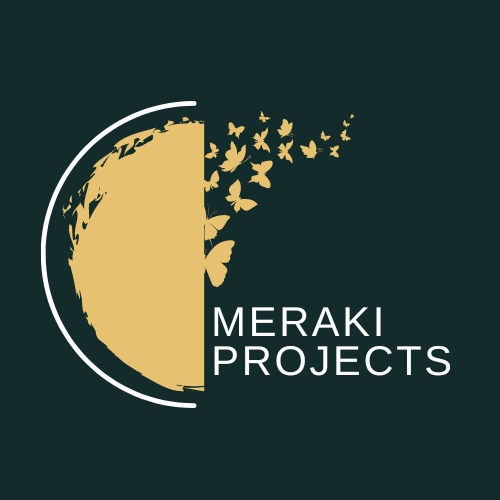
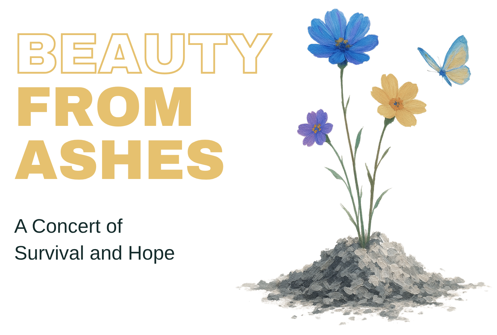

Hands-On Workshop
Kintsugi Workshops
The Art of Precious Scars
Our hands-on Kintsugi workshops turn visible repair into a reflection on resilience, healing, and hope. Workshops are offered throughout the Knoxville and Oak Ridge area.
Hands-On Workshop
The Art of Precious Scars
Our hands-on Kintsugi workshops turn visible repair into a reflection on resilience, healing, and hope. Workshops are offered throughout the Knoxville and Oak Ridge area.

Meraki [may-rah-kee] is a Greek word that means "to do something with soul, creativity, or love; to put something of yourself in your work".
The Meraki Projects are a series of relevant fine arts experiences that promote hope, healing, and restoration. Each project has a specific focus, with the goal of bringing these experiences to cities around the world.
Through music, dance, painting, poetry, and other art forms, each project creates space for compassion and meaningful conversation when words alone may not be enough.
The Second Meraki Project
A free community gathering in recognition of Pregnancy & Infant Loss Remembrance Day.
Wings of Light creates a gentle space for remembrance, hope, and healing through visual art, poetry, music, a keepsake remembrance craft, and quiet moments of reflection.
4775 New Harvest Ln, Knoxville, TN 37918
Thursday, October 15, 2026 at 5:00 PM
At 7:00 PM, we will join families around the world in the International Wave of Light with a community candle-lighting ceremony.
The First Meraki Project • Past Event
Transforming sorrow, grief, and despair into joy, beauty, and celebration.
Beauty from Ashes took place in Knoxville in September 2025 and focused on the courage, healing, and hope found in suicide survival.
Need support? Call or text 988, or visit the 988 Suicide & Crisis Lifeline.
Through original music, dance, painting, and poetry, the project shared stories of survival and created space for connection, reflection, and restoration.
The inaugural event has passed, but its project information, artists, and featured works remain available.
